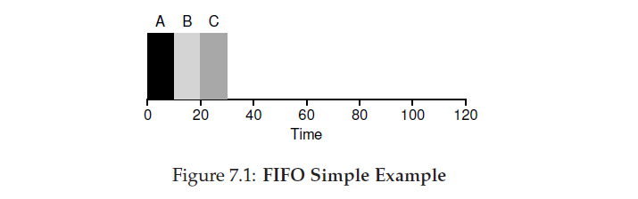
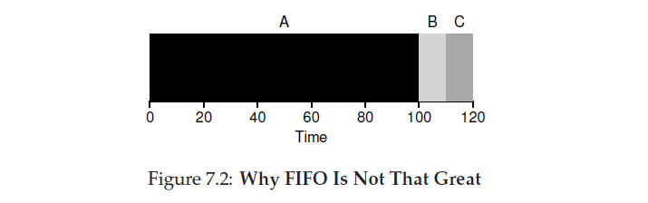
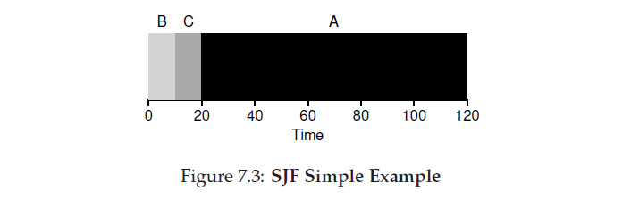
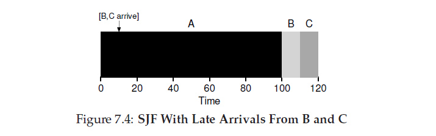
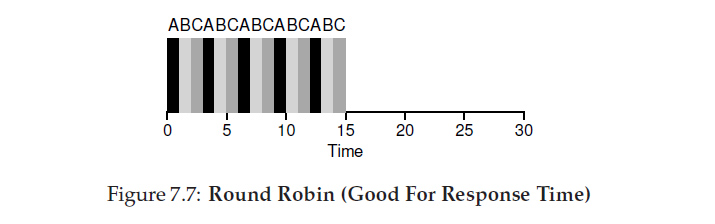

Inter Process Comms and Scheduling
Processes: can they speak to eachother? Who goes first when they’re both top dog?
Process scheduling on batch systems.
Scheduling is a way of achieving an outcome. First you need a metric by which it will be measured. One starting metric is turnaround. Simply put, how much time elapsed between the jobs arrival and its completion?
This measures performance. There are other metrics we might prefer depending on the use case. One is fairness. Often performance comes at the cost of fairness, and vice versa.
FIFO: First in, First out.
If you arrive first, you run to completion. This is the post office, bank and doctors waiting room model.

The downside, long jobs can block short ones

SJF: Shortest Job First.
In a batch system severl jobs often arrive at once. The teller could ask a group of customers, arriving together, how long their tasks are and serve the shortest tasks first. Making this assessment solves our problem, if a little unfairly.

A arrived first but is shunted to the back
The drawback: Jobs don’t always arrive together, and once paying-in-5c-coins-guy is at the counter, arriving a little late leaves you waiting forever.

If you’re a little late, it’s almost FIFO
Interactive systems
Enter time sharing and multiple users with interfaces. A new metric, responsiveness, asks how long does it take a new process to get system attention?
.
SRTL: Shortest Remaining Time Left
A first attempt at this allows us to preempt slow guy. If your quick job arrives, slow guy is told “Sir, we’re well on track, let me just answer this man’s quick question.”
Good: Quick guy’s question is answered and slow guy’s job continues. Improves average turnaround, a bit more responsive,
Bad requires us to know how long a process is. Short jobs still aren’t interrupted.
Round Robin
Serve each process for a “quantum” of time: 1ms, 10ms, etc
- The peak of fairness, solid response time
- Easy to implement, just a list and a quantum
- Performance killing context switches
- balances on a time slice that minimises switches while preserving responsiveness

Priority scheduling
The operating system isn’t running a fairness factory. In your computer some things have to happen no matter what.
- Keeping the internet connection up and listening for traffic
- Tracking thermals.
- 60fps twitch streaming.
- checking for windows updates
Attaching priority to tasks lets the OS season the complete fairness of round robin with a little pragmatism.

Lottery scheduling
Haha no! The workbook answer isn’t here. You’ll have to read the ostep chapter.
We will say that it uses randomness to help get around our human inability to plan for all outcomes.
Thread scheduling
When two people want an unsharable resource we have… conflict! So it goes with threads. To solve it, like with human problems, we need barriers and locks!
Mutual Exclusion
One one to understand this is with a dramatic reinterpretation of Navin Ipe’s outdated phonebooth metaphor provided below.
Say you’re at a nightclub at 2am and your bowels want to move. You head to the toilet, you wait 35 minutes, and you get a cubicle. Once inside you discover… no lock! It’s sort of hanging off one screw and you can’t fix it. The only option is to sit, take care of business, and stick your foot against the door.
Every 8-10 seconds someone staggers by and tries to push it open, but the bones of your leg win each time. When you’re done, you take your foot off the door, leave and the cubicle and the next person enters!
The threads are: you and each staggerer
The mutex is: the door
The lock is: your leg/foot
The resource is: the throne.
Any thread wanting to run code that can’t be interrupted (a person on the toilet) has to place a lock (stick out foot) on a mutex (against the door).
nightclub.cpp
#include <iostream> #include <thread> #include <mutex> std::mutex door;//you can use std::lock_guard if you want to be exception safe int i = 0; void moveYourBowel() { // You enter the cubicle and extend your leg door.lock(); // Your foot presses against the door // You go about your planned activity privately std::cout << i << "COUGH cough" << std::endl; i++; // You complete your atomic action without // interruption, having secured the resource door.unlock(); // You lower your leg and exit, freeing // the resource } int main() { // You are on the dance floor with many patrons. // You leave the crowd to ease a burden std::thread dancer(moveYourBowel); // Another dancer lurches from the dance floor, // making straight for the loos. std::thread staggerer1(moveYourBowel); //And hey, man3 also joined the race to the booth std::thread staggerer2(moveYourBowel); dancer.join(); //Finished, you rejoin the crowd. staggerer1.join(); // Staggerer1 returns to his bad dancing. staggerer2.join(); // So does 2. return 0; }
Compile and run it using
g++ -std=c++0x -pthread -o thread thread.cpp
./thread
Kernel Space and User Space